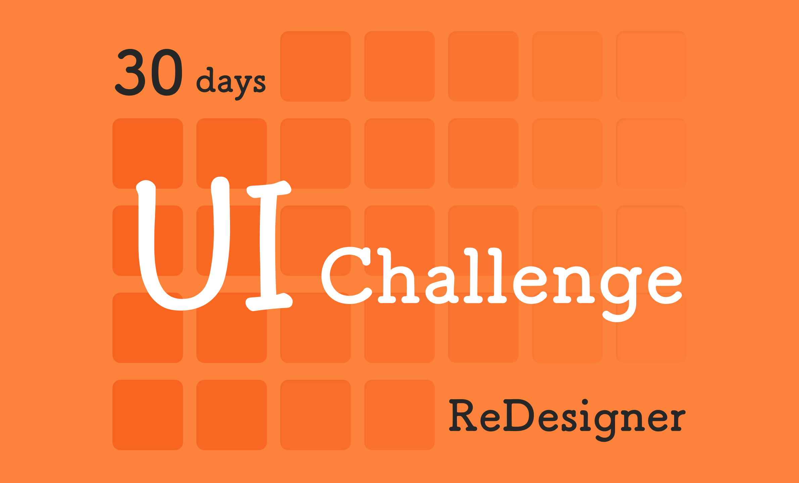
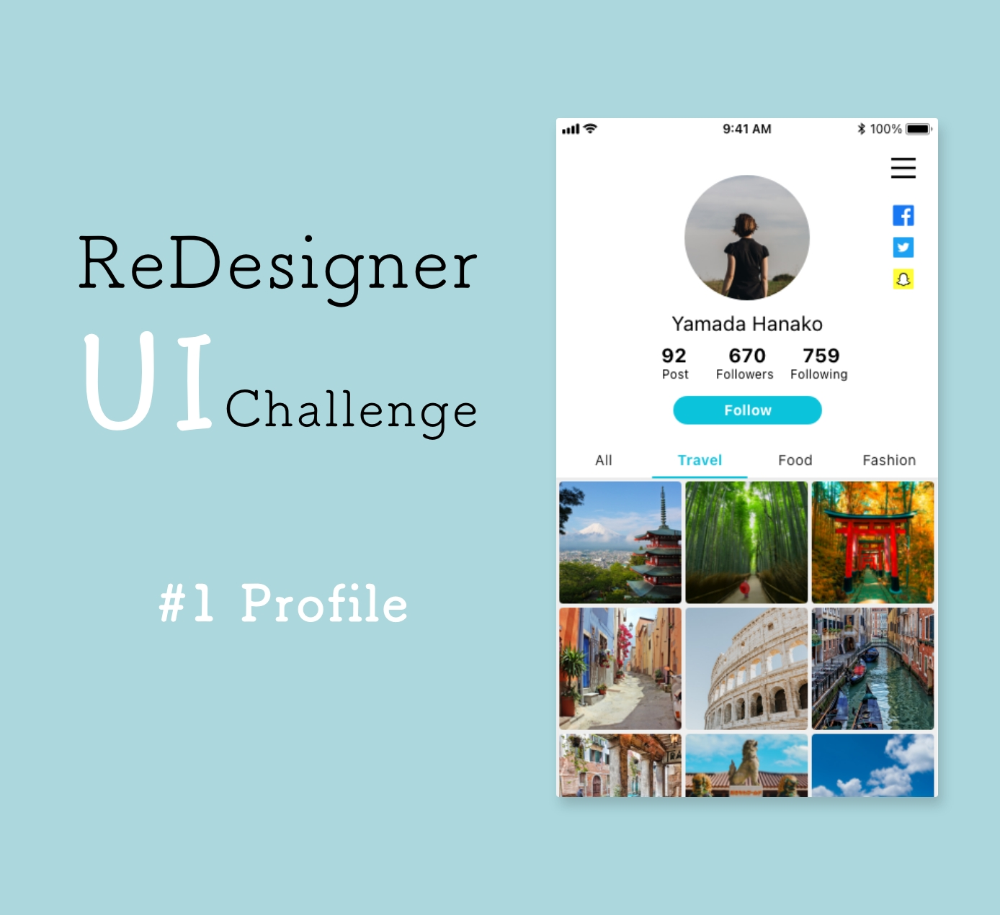
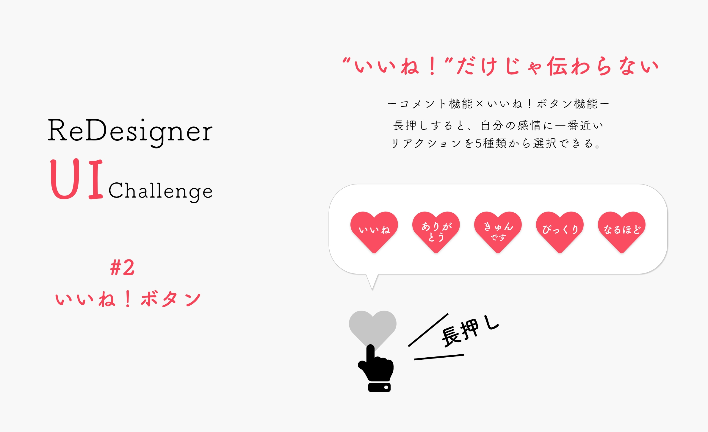
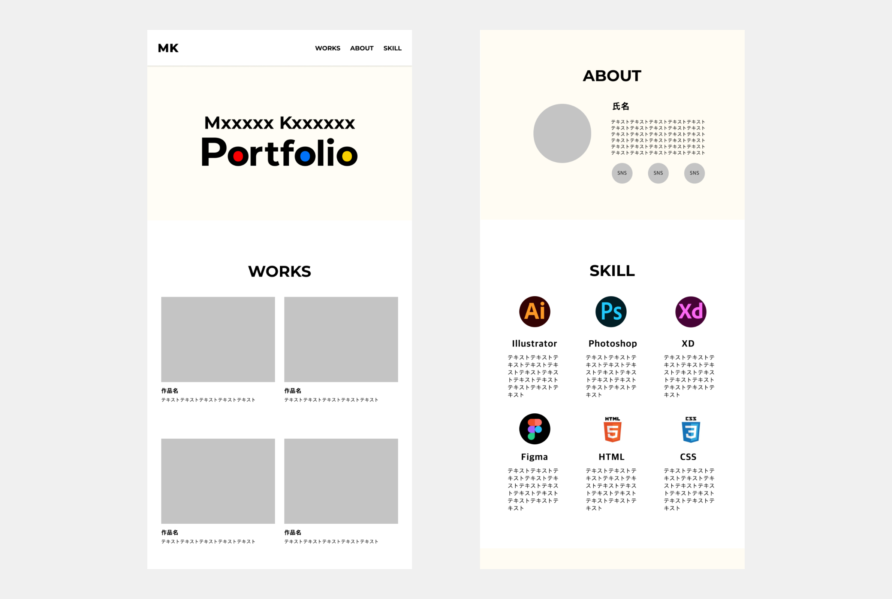
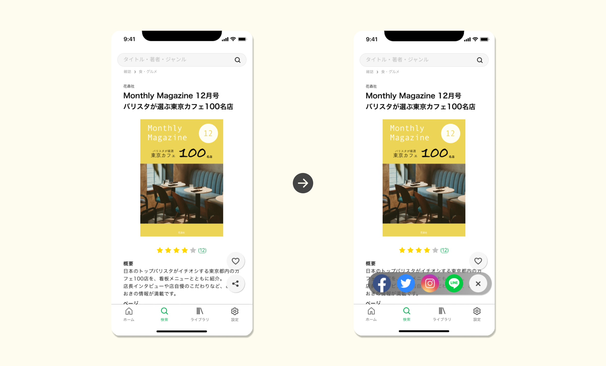

【UI】30 days UI Challenge
Overview
デザイナー特化キャリアサイトReDesigner for Studentにて出題される30日間のUIデザインに取り組みました。
Information
- 制作種別・・・
- 自主制作
- 制作期間・・・
- 6日
- 使用ソフト・・・
- XD
Figma
#1
プロフィール画面
カテゴリー別に投稿できるSNSのプロフィール画面
#2
いいね！ボタン
様々な感情を表せるいいね！ボタン
投稿内容に対してコメントするのは憚られるが、「いいね」以外の思いを発信者に伝えたいときに自分の感情に一番近いリアクションを投稿者に伝えることができます。
#3
ポートフォリオデザイン
#4
SNSシェア画面
おすすめの本を記録・検索・シェアできるアプリ

どこをスクロールしていても「保存」や「シェア」ができるよう、両ボタンを右端に固定。
シェアするためのSNSアイコンはスクロール中邪魔にならないよう、長押し&フリックで選択できるよう設計しました。
#5
メッセージ画面
ビジネスシーンで使うメッセージアプリ

ポイントは、自分が打ち込んだ文章全体を確認することができるところです。
短文を複数回に分けて送るよりも長文を一度で送る機会が多いことから、
①タイプミスに気付きやすい
②実際に送ったときの文の長さや改行場所を確認しやすい
UIをデザインしました。